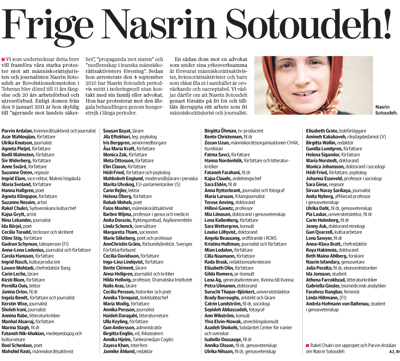

|
|
در پرتو همبستگی خواهرانه برای آزادی نسرین ستوده : امضای بیش از 130 تن از زنان فعال در سوئد
شنبه2 بهمن 1389

تغییر برای برابری - زنان فعال در سوئد، اعم از فعالان حقوق اجتماعی، زنان و پناهندگی، نویسندگان، شاعران، هنرمندان، روزنامه نگاران، ... خواستار آزادی نسرین ستوده شدند. بیش از 130 نفر از این زنان با انتشار بیانیه ی در 21 ژانویه 2011، اعتراض خود را به احکام صادر شده علیه نسرین ستوده بیان داشته اند. آنان با اشاره به ادامه بازداشت، و صدور حکم سنگین 11 سال زندان و 20 سال محرومیت از وکالت و خروج از کشور برای نسرین ستوده اعلام کرده اند:« صدور چنین حکمی برای وکیل حقوق بشر و فعال حقوق زنان وکودکان، هشدار دهنده و غیر قابل قبول است. ما ضمن در خواست آزادی نسرین ستوده، خواهان عدم ممانعت او از ادامه فعالیت هستیم.»
رونوشتی از این بیانیه برای بیرگیتا اولسون وزیر سوئدی اتحادیه اروپا و کارل بیلت وزیر امور خارجه سوئد ارسال شده است. در میان امضا کنندگان اسامی سرشناسانی در میان فعالان سازمان های سراسری زنان، سردبیرهای نشریات رسانه های بزرگ سوئد، سیاستمداران، هنرمندان و نویسندگان مطرح سوئدی به چشم می خورد.
متن کامل بیانیه به همراه اسامی امضا کنندگان، یادداشت هایی از راکل شکری سردبیر بخش فرهنگی و پروین اردلان فعال حقوق زنان، صفحات ویژه ای از روزنامه سیدسونسکا در سوئد را به خود اختصاص داد.
راکل شکری سردبیر بخش فرهنگی نوشته است:« اختصاص صفحاتی ویژه برای نسرین ستوده اهمیت زیادی دارد. نویسندگان، روزنامه نگاران، هنرمندان بسیار تحت سانسور قرار دارند. هرهفته مطبوعات سوئدی وضعیت نگران کننده داوید ایساک، نویسنده و روزنامه نگار سوئدی – اریتره ای را گزارش می دهند اما تا به حال هیچ دادگاهی برای او تشکیل نشده و همچنان از سال 2001 در زندان اریتره به سر می برد. بیانیه زنان برای آزادی نسرین ستوده هشداری است به نظام های غیردموکراتیک که مانع فعالیت فعالان شان می شوند. خوشبختانه ایران جزیره ای منزوی نیست پل های ارتباطی بسیاری بین ایران و سایر جهان وجود دارد.»
پروین اردلان نیز در تصویری که از نسرین ستوده به شهروندان سوئدی ارائه داده است، نوشته « نسرین به واقع، صدای کسانی است که بی صدا بودند. نسرین نماد مقاومت زنان ایران در برابر تبعیض قانونی هم در نقش وکیل و هم در نقش متهم است. او و وکلای اندکی چون او، به عنوان وکیل مدافع حقوق بشر و حقوق زنان گفتمان حقوقی را به گفتمان حقوق بشری ارتقا دادند و مفهوم وکیل را از شکل تجاری، اقتصادی یا مکانیکی به مفهوم انسانی آن دگرگون کردند. او نشان داد یک وکیل مدافع قانونی عمل می کند اما مداخله گر هم هست و قانونی را که ناقض حقوق برابر و حقوق بشر باشد هم نقد می کند.»
وی سپس درباره همبستگی زنان برای آزادی نسرین ستوده نوشته است:« همبستگی خواهرانه و جهانی برای آزادی زنانی چون نسرین ستوده، دفاعیه ای است برای وکیلی شجاع و در بند، دفاعیه ای است به نشانه هم صدایی با زنان برای تحقق برابری جنسیتی و آزادی بیان و عمل. تلاشی است برای نشکستن امیدهایمان در پرتو همبستگی خواهرانه در سراسر جهان.»
پیش تر نیز صدور حکم دادگاه تجدید نظر درباره نسرین ستوده با واکنش جامعه مدنی سوئد روبه رو شده بود. نشریه فمینیستی فمینیست پرسپکتیو از زمان صدور حکم نسرین ستوده تاکنون با انتشار اخبار مربوط به او، یادداشت ها و گفتگوهایی با شیرین عبادی و همسر نسرین ستوده به پی گیری پرونده او حساسیت نشان داده است، پن سوئد نیز با انتخاب نسرین ستوده به عنوان عضو افتخاری پن سوئد اعلام کرد که پی گیر وضعیت نسرین ستوده هست.
بیانیه زنان سوئدی به مثابه بخشی از جامعه مدنی سوئد در حالی منتشر می شود که طبق گزارش اخیر رسانه های سوئدی حجم صادرات اقتصادی شرکت های سوئدی چون ولوو، اسکانیا، اریکسون،... به ایران طی یک سال اخیر تقریبا دو برابر شده است.
متن کامل بیانیه به همراه اسامی امضا کنندگان
http://www.sydsvenskan.se/kultur-och-nojen/kulturkritik/article1361604/Frige-Nasrin-Sotoudeh.html